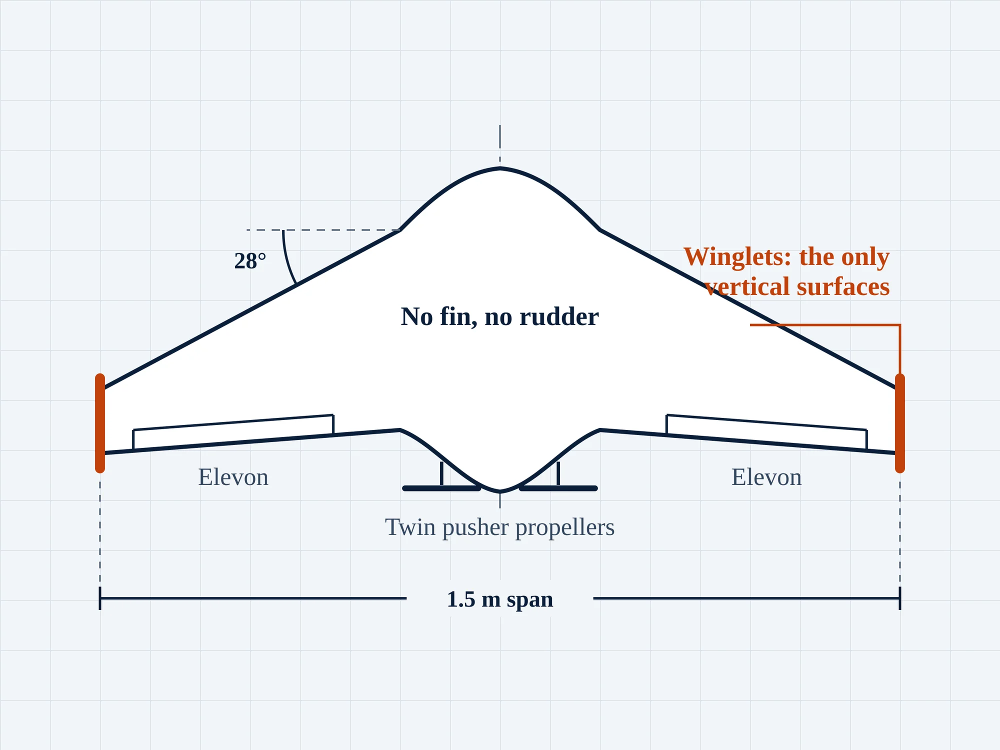
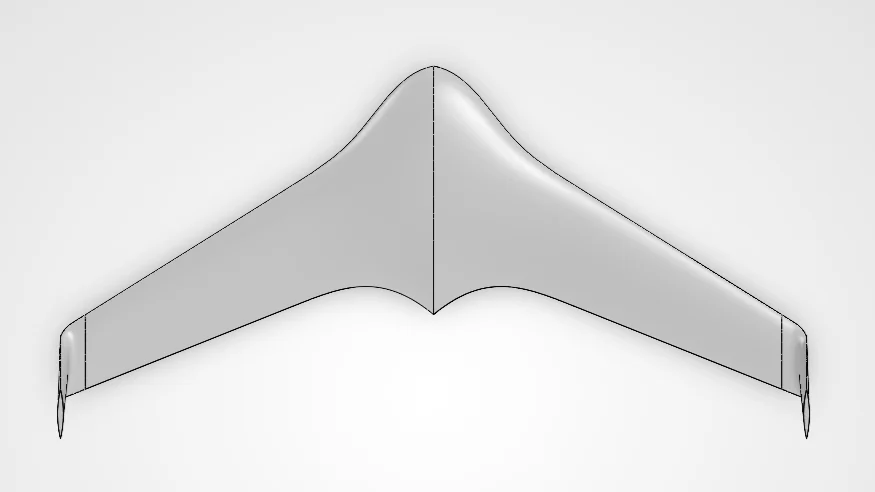
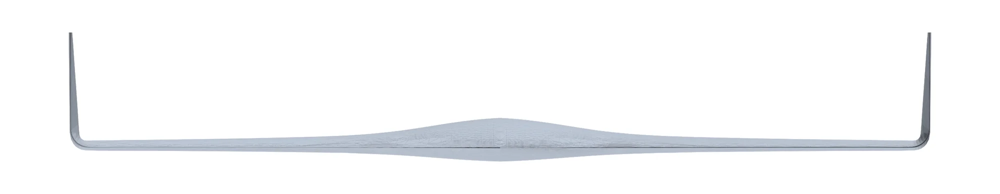
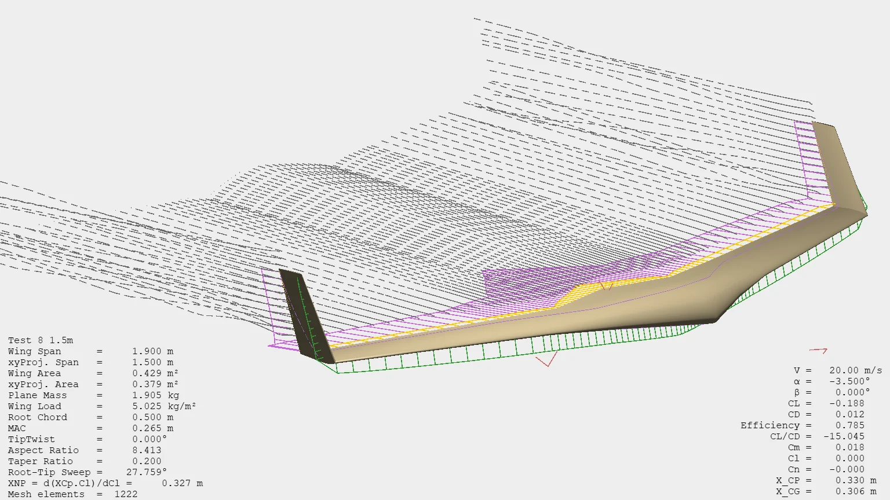
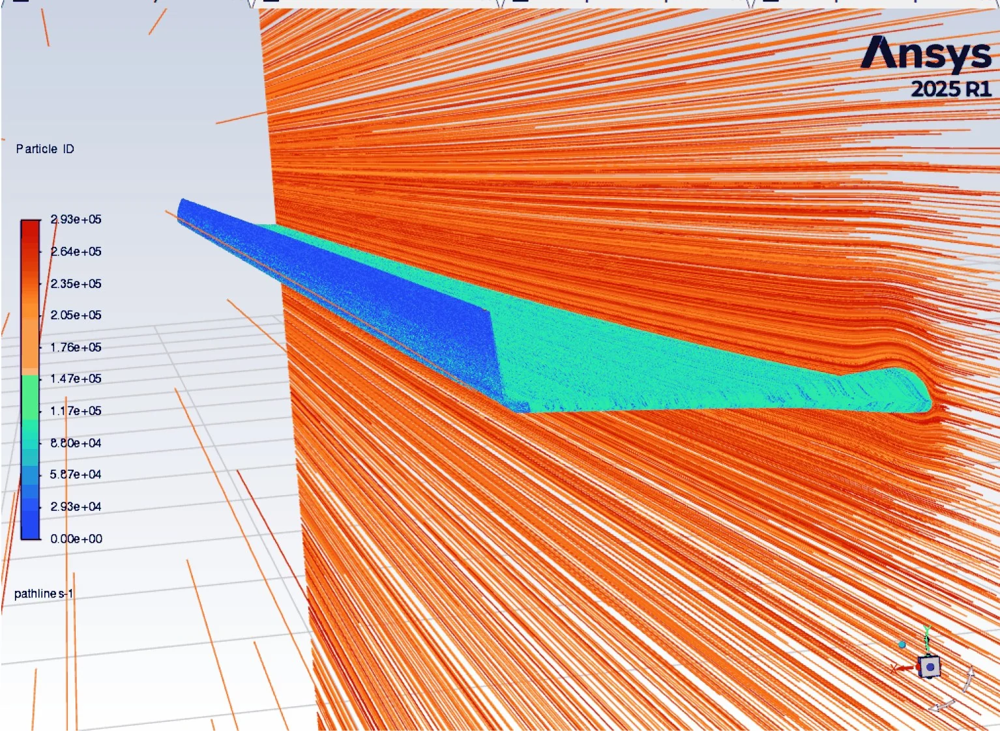
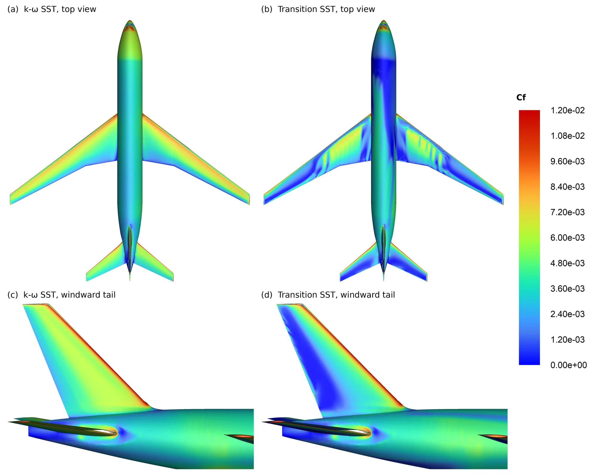
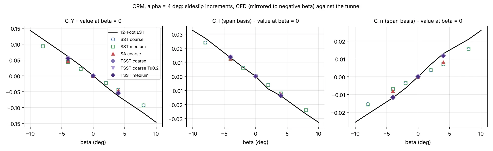
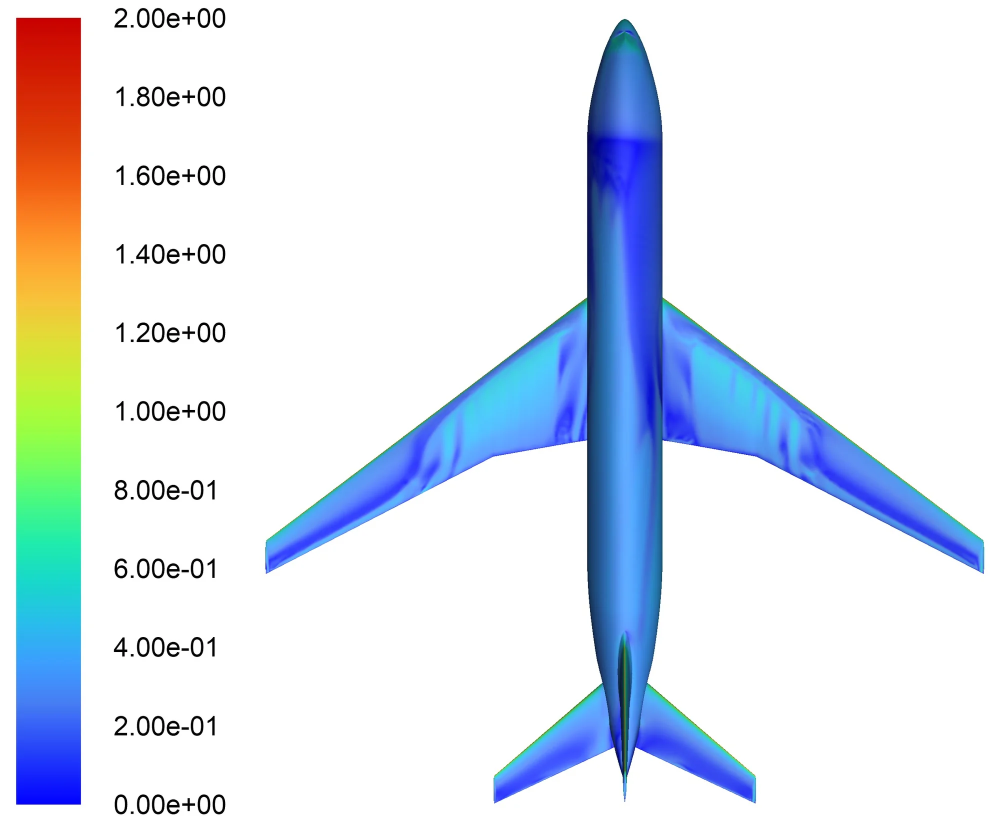
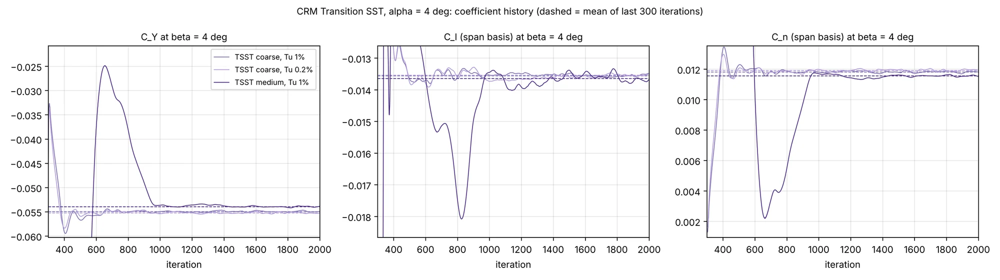

Winglet cant angle and yaw stability of a rudderless flying wing, with the CFD method validated against NASA wind tunnel data first.
RoleSole researcher
TypeBEng dissertation, Strathclyde
SupervisorDr Umer Saleem
DatesSept 2026 to Apr 2027
Read6 min
3 kgtake-off mass
1.5 mwingspan
20 m/scruise
28°leading-edge sweep
11%Cnβ gap to NASA tunnelstandard SST was 46% low
1%Clβ gap to tunnel
Loading the 3D model…
01 · The airframe
One wing. No fuselage. No tail.
The whole aircraft is a lifting surface. A deep centre body blends into swept outer wings, so there is no wing-fuselage junction to pay drag for, and plenty of internal volume.
3 kgdesign take-off mass
02 · Planform
1.5 m span, 28° of sweep.
Sized in XFLR5 for 20 m/s cruise at an aspect ratio of 5. The same span as the Lehmkuehler tunnel model, which makes later comparison easier.
1.5 mwingspan, poppy line
03 · Profile
Stable without a tailplane.
A Clark Y baseline would not trim. Reflexed sections, blending from an MH60 at the root to an MH 45 at the tip, give a positive static margin with no horizontal tail.
MH60 → MH 45reflexed aerofoil blend
04 · Wingtip fins
The fins do the tail's job.
No fin and no rudder, so the wingtip fins carry directional stability alone. Their cant angle trades side area against where the side force acts, and that sets CYβ, Clβ and Cnβ.
CYβ · Clβ · Cnβthe derivatives the dissertation measures
05 · Airflow
Into the virtual wind tunnel.
Before any BWB result counts, the Fluent sideslip method was validated on the NASA Common Research Model. Transition SST matched the tunnel Cnβ within 11%.
11%Cnβ gap to NASA tunnel dataStreamlines here are illustrative. The real CFD is below.
01 · The problemNo fin, no rudder, very little yaw stability
Blended wing bodies are more efficient than tube-and-wing layouts. The catch is stability. With no fuselage and no tail there is a short moment arm and very little vertical area, so directional stability is weak. The balance between the yawing moment derivative Cnβ and the rolling moment derivative Clβ decides whether the aircraft drifts towards Dutch roll or spiral divergence.
On a small rudderless BWB the wingtip fins do that job alone, and their cant angle is a trade. A more vertical fin gives more side area, which drives Cnβ and the side force derivative CYβ. Canting it changes the height and direction of that side force, which moves Clβ. Small UAV teams usually set the angle by eye or with an inviscid vortex lattice tool such as XFLR5, whose accuracy at low Reynolds number is uncertain.
The variable, drawn to scale
Front view. Drag to cant the fins outward.
0°, upright60°
15°cant angle
97%vertical side area left
15°fin force tilted off horizontal
Geometry only, not a result. How these two effects net out in Cnβ, Clβ and CYβ is exactly what the CFD sweep will measure.
02 · Aim and objectivesQuantify it, with a method I can trust
The aim is to quantify how wingtip fin cant angle changes the static lateral-directional stability derivatives (CYβ, Clβ and Cnβ) of a 1.5 m span, 3 kg rudderless BWB UAV cruising at 20 m/s.
Validate an ANSYS Fluent sideslip method against published wind tunnel data, on the NASA Common Research Model.
Find how cant angle changes Cnβ, Clβ and CYβ on the BWB, in both Fluent and XFLR5.
Compare the CFD with a scaled BWB wind tunnel model.
Judge when the faster vortex lattice tool is good enough, and when RANS CFD is needed.
The closest studies used an inviscid panel method or XFLR5 alone. Neither gives validated viscous predictions at small UAV Reynolds numbers. That is the gap.
Horwitz (2021) studied cant angle with a panel method on an airliner-scale flying wing. Sheneshen and Kamal (2025) looked at BWB winglets in XFLR5, with no CFD or experimental check.
03 · The aircraftReflexed sections, twin pushers, swappable fins
The baseline was sized in XFLR5 for a 3 kg take-off mass, 1.5 m span and 20 m/s cruise, with an aspect ratio of 5 and 28° of sweep. The sections blend from an MH60 at the root to an MH 45 at the tip. Both are reflexed, which lets the wing trim on its own with a positive static margin and no horizontal tail.
Propulsion is twin pusher propellers at the trailing edge of the centre body. I chose these over an electric ducted fan, and because they push from behind the wing the prop wash does not need modelling in the CFD. The planned build uses 3D-printed formers under a glass and carbon skin, with interchangeable fin mounts so every cant angle flies on the same airframe.

Layout. No fin and no rudder, so the wingtip fins are the only vertical surfaces.

SolidWorks planform with elevons, fin cuffs and the centre body.

Front view of the 3D model, showing the centre body blend and the fins.
04 · Sizing in XFLR5A Clark Y that would not trim
Sizing followed a wing loading sequence, then vortex lattice sweeps from −5° to 13°. An early Clark Y baseline would not hold trim, which led to the switch to reflexed MH sections. Along the way I traced a trim failure to a control surface sweep run on a model with no control surfaces defined, and fixed a centre of gravity reference mismatch between the VLM and panel methods.

XFLR5 vortex lattice model at 20 m/s, used for sizing and trim.

Preliminary. An early Fluent test at 0° and 20 m/s, run before the method was validated.
XFLR5, front view. Spanwise lift on the vortex lattice model as the operating point sweeps up in angle of attack.
05 · Validating the CFDTrust the method before the answer
Small changes in cant angle produce small changes in the derivatives, so a method that is off by 40% would make the study meaningless. Before running a single proper BWB case, I validated the method on an aircraft with published sideslip data.
No BWB dataset with public geometry and low-Reynolds sideslip data exists, so I used the NASA Common Research Model from the Second AIAA Stability and Control Prediction Workshop. Its blind 2.4% scale tunnel data was taken at Re = 200,000, close to my UAV. The model was not tripped, so its boundary layer is partly laminar, and that turned out to matter a great deal.
CaseNASA CRM, 2.4% scale, Langley 12-Foot tunnel
ConditionsRe 200,000, Mach 0.052, α 4°, β 0° to 8°
DomainCylinder, domed inlet, inflow rotated for sideslip
MeshPolyhedral, 25 to 28 prism layers, first cell 1.5 × 10⁻⁵ m
Modelsk-ω SST, Spalart-Allmaras, Transition SST
OutputsCYβ, Clβ, Cnβ per radian, β 0° to 4°
Each model against the tunnel, Cnβ
All three models get the signs right, so each predicts a directionally stable aircraft with a stable dihedral effect. The magnitudes are a different story. Fully turbulent models under-predict Cnβ by 38% to 46%. Transition SST cuts that to about 11% and gets Clβ within 1%, because it can capture the laminar flow on the untripped tunnel model. The skin friction plots show it directly, and Transition SST became the solver for the BWB.

Skin friction on the CRM at β = 4°. Fully turbulent SST (a, c) against Transition SST (b, d). The low-friction blue regions are laminar flow that only Transition SST captures.
Sideslip derivatives for every model and mesh against the tunnel slope (grey).

Increments against sideslip. CFD points against the tunnel line.
Case
CYβ
Clβ
Cnβ
Wind tunnel
−0.920
−0.199
0.185
k-ω SST, medium
−0.626 (−32%)
−0.174 (−13%)
0.100 (−46%)
Spalart-Allmaras, coarse
−0.663 (−28%)
−0.179 (−10%)
0.115 (−38%)
Transition SST, coarse
−0.785 (−15%)
−0.195 (−2%)
0.169 (−9%)
Transition SST, medium
−0.772 (−16%)
−0.197 (−1%)
0.165 (−11%)
Derivatives per radian, β = 0° to 4°, Cl and Cn on span basis. Error against the tunnel in brackets.
06 · Mesh study and sensitivityAn honest result, not a perfect one
Mesh
Cells
Aircraft face size
Used for
Coarse
12.7M
4.3 mm
Model and inlet Tu comparisons
Medium
23.0M
2.9 mm
Main validation results
Fine
43M
finer
Three-level GCI, in progress
A two-level grid convergence index between coarse and medium is below 3% for SST but reaches 14% on Cnβ for Transition SST, partly because its coefficients scatter by about ±0.5% between iterations. That puts the 11% tunnel gap inside the numerical uncertainty. The fine 43M-cell mesh has run, and a three-level study is being completed to tighten it.
Inlet turbulence intensity barely matters. Dropping it from 1% to 0.2% moved the derivatives by under 0.7%, while switching turbulence model moved Cnβ by about 67%.

Wall y+ with Transition SST. Average 0.33, maximum 1.84, so the boundary layer is resolved to the wall.

Coefficient histories at β = 4°. Settled by about 1,000 iterations, averaged over the last 300.
07 · Running it at scaleLaptop to finished run without opening the GUI
Every case runs on ARCHIE-WeSt, Strathclyde's HPC cluster, under a teaching allocation of 20 cores per job and two days of wall time. I wrote the Slurm batch scripts, Fluent journals and settings files, and chained the meshing and solver jobs so one starts as soon as the other ends. A single Transition SST run takes 12 to 24 hours on 20 cores.
Force and moment histories come back to Python scripts that join, average and compare them against the tunnel. Post-processing is scripted too: a generated Fluent journal renders every contour at 4K with fixed views and colour ranges, so SST and Transition SST images line up exactly.
Per job20 cores, 2 days wall time
Per Transition SST run12 to 24 hours
AutomationSlurm, Fluent journals, Python
08 · What went wrongAnd what I learned from it
Boundary conditions. The first CRM results were 40% to 50% low. Comparing with the tunnel led me to the cause: only the dome was an inlet, so part of the outlet was drawing flow back in. I fixed it and reran every case.
One meshing workflow. I moved from Ansys Meshing to Fluent Meshing part way through, then remeshed every level so the whole study comes from one consistent workflow.
Memory limits. A 50M-cell fine mesh ran out of memory on a single node, so I rebuilt it at 43M cells to fit one node rather than split the job.
Being honest about the data. Drag and pitching moment do not match the tunnel, most likely because the CFD has no support sting or tunnel walls. I say so, and draw conclusions from the sideslip derivatives only.
09 · ProgressStep 03 of 06, CFD validation
Completed
Size the aircraft
XFLR5 sizing and trim. MH60 to MH 45 sections.
First draft done
Review the literature
Gap found for validated viscous results at UAV scale.
Current stage
Validate the CFD
NASA CRM done. Three-level mesh study closing out.
In spring 2027 the BWB is meshed with the same locked-in settings and swept through β = 0°, 2°, 4° and 8° for a set of cant angles, with matching XFLR5 runs. The setups and job scripts are fixed, so the runs can be automated over the winter break. A smaller BWB tunnel model with interchangeable fins is planned for the same semester. Building and flying the full-size aircraft is a stretch goal, only once the core work is done. The dissertation is due on 20 April 2027.
10 · Tools and readingWhat it took
ANSYS Fluent
Fluent Meshing
XFLR5
SolidWorks
ARCHIE-WeSt HPC
Slurm
Python
Excel
Led
Viscous RANS setup
Turbulence and transition model selection, polyhedral meshing with prism layers sized for y+ below 1.
Led
Verification and validation
Grid convergence index study and comparison with blind wind tunnel data.
Led
Stability analysis
Lateral-directional derivatives and their link to Dutch roll and spiral modes. Tailless trim with reflexed sections.
Led
HPC automation
Batch workflows, Fluent journal scripting and Python post-processing.
Background reading
Suewatanakul, S. et al. (2022). Conceptual design of a hybrid hydrogen fuel cell/battery blended-wing-body UAV. Aerospace 9(5), 275.
Lehmkuehler, K., Wong, K.C. and Verstraete, D. (2012). Design and test of a UAV blended wing body configuration. ICAS 2012.
Horwitz, J.M.T. (2021). Parametric design of the Flying-V winglets for improved lateral-directional stability and control. MSc thesis, TU Delft.
Sheneshen, A.M. and Kamal, A.M. (2025). Influence of winglets design parameters on aerodynamic and stability of a blended wing-body aircraft. J. Phys. Conf. Ser. 3070, 012004.
Mariani, R. et al. (2022). Wind tunnel test of a blended wing body unmanned aerial vehicle. ICAS 2022.
Simmons, B.M., Lofthouse, A.J. and Vicroy, D.D. (2026). Summary of the Second AIAA Stability and Control Prediction Workshop. AIAA SciTech 2026.